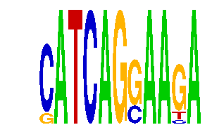

family_19 |
|---|
|  |
| Download PWM |
| Download instances (motifs) |
| Show motif distribution |
Query_ID | Query_Consensus | Subject_Name | Source_DB | Subject_ID | Length | Orientation | Offset | Divergence | Overlap | Subject_Consensus |
|---|---|---|---|---|---|---|---|---|---|---|
| family_19 | CATCAGGAAGA | YATTNATC | JASPAR | PF0097 | 8 | as given | -4 | 0.871 | 4 | TATTNATC |
Sequence | Start_position (from start) | Start_position (from end) | Average conservation | Best conservation score | Instance_with_best_CS | Best_Z-score | Instance_with_best_ZS | Strand |
|---|---|---|---|---|---|---|---|---|
| chr6:34645500-34647200 | 575 | 586 | 0.00636364 | 0.023 | SATCAGSAAGA | 12.745775 | SATCAGSAAGA | -1 |
| chr2:165921381-165922600 | 896 | 907 | 0.0257273 | 0.057 | SATCAGSAAGA | 14.104345 | CATCAGSAAKA | 1 |
| chr17:27003900-27006500 | 1705 | 1716 | 0.00172727 | 0.003 | SATCAGSAAGA | 12.745775 | CATCAGSAASA | 1 |
| chr2:17460500-17461948 | 1424 | 1435 | 0.001 | 0.002 | CATCAGSAAKA | 14.104345 | CATCAGSAAKA | 1 |
| chr5:122519600-122523400 | 719 | 730 | 0.0289091 | 0.034 | CATCAGSAASA | 12.745775 | CATCAGSAASA | 1 |
| chr8:23672500-23674400 | 343 | 354 | 0.0176364 | 0.031 | SATCAGSAAGA | 14.104345 | CATCAGSAAKA | 1 |
| chr18:61787284-61788500 | 844 | 855 | 0.0672727 | 0.102 | CATCAGSAAKA | 12.745775 | SATCAGSAAGA | 1 |
| chr14:55564998-55565998 | 439 | 450 | 0 | 0 | SATCAGSAAGA | 14.104345 | CATCAGSAAKA | 1 |
| chr5:130276300-130277311 | 400 | 411 | 0.0121818 | 0.039 | CATCAGSAAKA | 12.745775 | SATCAGSAAGA | 1 |
| chr9:115775900-115777560 | 439 | 450 | 0.00290909 | 0.008 | CATCAGSAAKA | 12.745775 | SATCAGSAAGA | 1 |
| chr10:90904800-90906285 | 746 | 757 | 0.0125455 | 0.023 | SATCAGSAAGA | 12.745775 | CATCAGSAASA | 1 |
| chr6:24504000-24505317 | 243 | 254 | 0.805727 | 0.959 | SATCAGSAAGA | 14.104345 | CATCAGSAAKA | 1 |